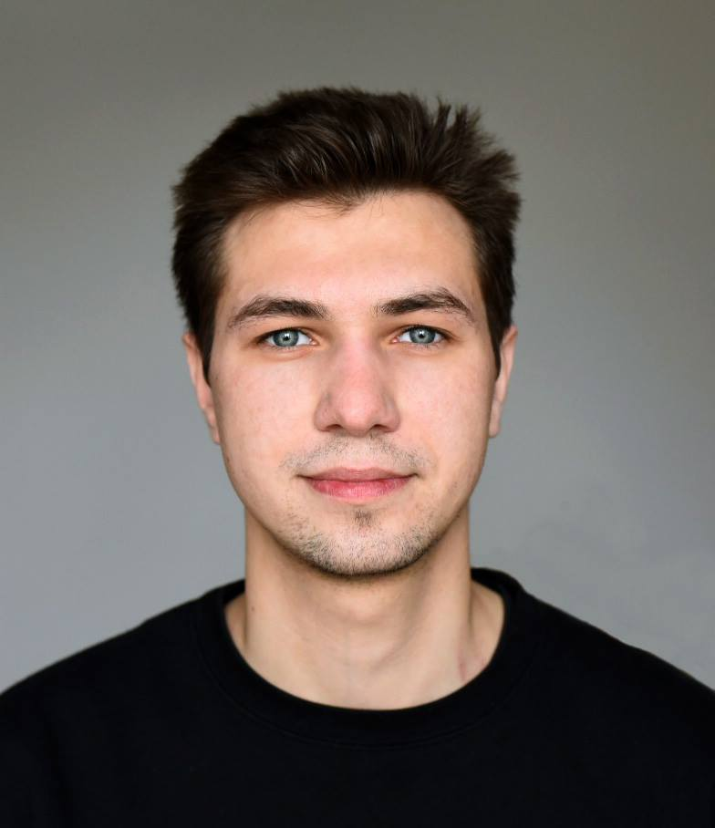

|
Born in: May 18, 1995 Phone: +380631898115 Location: Lviv, Ukraine E-mail: roman.prokop.814@gmail.com |
 |
| I have only started moving on my career path, but I am sure that I found job which truly like. I am treating daily work as a challenge and something you do with pleasure and satisfaction rather than must unavoidable duty. My main goal is to constantly strive for high quality solutions and to take a lot of professional pride in my work. I am eager to obtain new knowledge and to study from the best professionals. |
|
"!FEST" Holding of Emotions”, Lviv, Ukraine, 01/2014 - 07/2015
The waiter, bartender “X-bar & ArtFun”, Lviv, Ukraine, 10/2015 – 02/2017 Bartender, senjor manager "MAN Truck & Bus Center” , Lviv, Ukraine, 06/2016 – 09/2017 Electrician, Pneumatics Engineer, Mechatronics Diagnostician |
|
Bachelor degree in Automotive Engineering (Wheeled and Tracked Vehicles), 2016 Institute of Engineering Mechanics and Transport, National university “Lviv Polytechnic”, Lviv, Ukrainebr Theme project: “Clutch in truck with full weight of 22800 kg” |
|
Master degree in Automotive Engineering (Wheeled and Tracked Vehicles), 2017 Institute of Engineering Mechanics and Transport, National university “Lviv Polytechnic”, Lviv, Ukraine Theme project: "Modernization of the exhaust system for reduction of harmful emissions in cars of the standard from Euro-3 to Euro-5". |